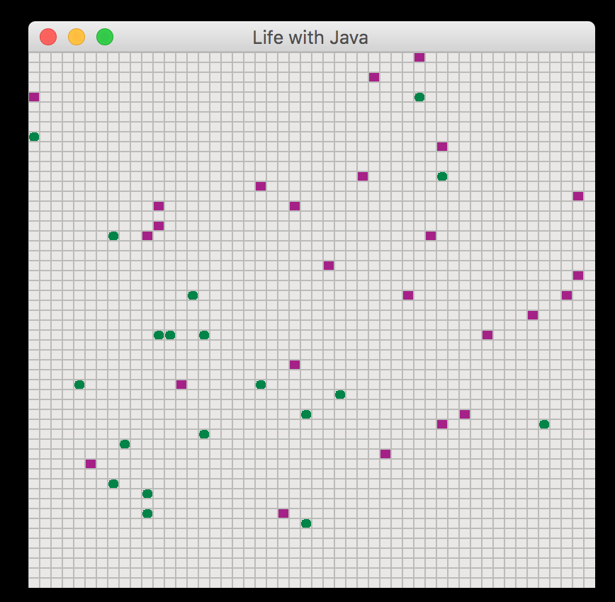
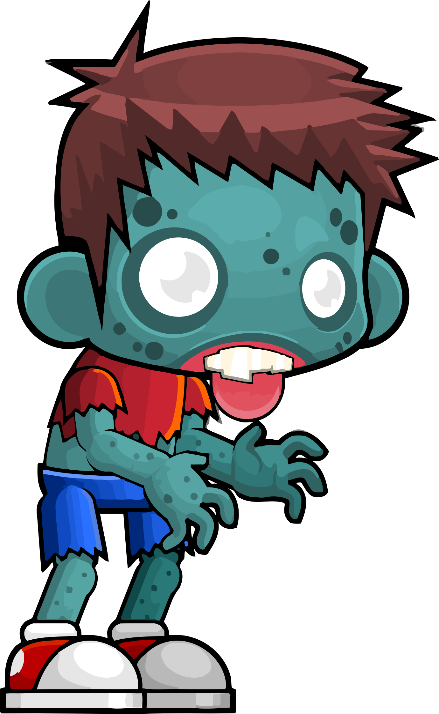
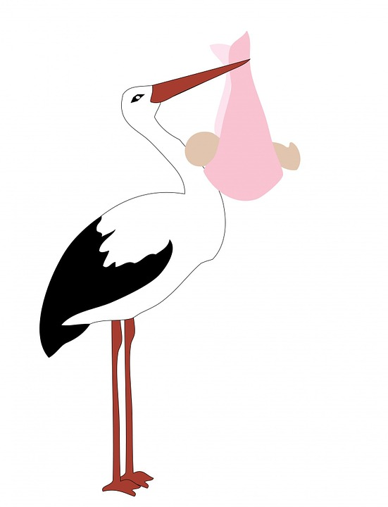

02 Prove
Interfaces and the Game of Life
Objectives
Create and implement a Java interface.
Augment an existing application with new behaviors based on interfaces.
Game of Life
A relatively famous computer science simluation is a cellular automation program called The Game of Life.
In this assignment, you will use Java interfaces to implement a modified version of this simulator.
Part I (18%) - Become Familiar With the Code:
-
Download the existing source code for this project:
git clone git@gist.github.com:4c64c1d8d2ef656d0201852227a0a5d8.git -
Make sure you are able to compile and run the existing program:
javac *.java java Game -
Examine the .java files to make sure you understand the purpose of each:
Game.java - This file contains the
main()method. It initializes theListofCreatureobjects, and then creates theWorld.World.java - This class creates the GUI, handles GUI events such as resizing and repaiting, and kicks off the background thread for updating the state of the
Creatureinstances.Creature.java - Contains the abstract base class from which all
Creaturesubclasses must inherit.Movable.java - Contains the definition of the
Movableinterface. This interface should be implemented by all subclasses ofCreaturethat can move.Aggressor.java - Contains the definition of the
Aggressorinterface. This interface should be implemented by all subclasses ofCreaturethat can attack other creatures.Aware.java - Contains the definition of the
Awareinterface. This interface should be implemented by all subclasses ofCreaturethat can sense and react to other creatures around them.Plant.java - A subclass of
Creaturethat does nothing but provide food for other creatures. Instances of thePlantclass are represented in the game by green circles. Plants start with one health point.Animal.java - A subclass of
Creaturethat implements theMovableandAggressorinterfaces. Instances of theAnimalclass are represented in the game by red squares. They move in random directions and if they land on a plant, they will eat it.Animalinstances start with one health point and gain a health point for every plant they eat. Animals inflict one point of damage when they attack.Shape.java - An enum that contains possible creature shapes.
CreatureHandler.java - This class coordinates the behavior of each
Creatureinstance. The key method in this class is theupdateCreatures()method, which is called by theWorldclass every time the update loop runs. This method will iterate through aListofCreatureinstances, determine which behaviors they implement, and signal theCreatureinstance to carry out those behaviors.
Part II (25%) - Create a Zombie:
Your first task is to create a new Zombie creature based on existing behaviors.
It will start out by moving from left to right across the screen, devouring anything it comes in contact with, except for plants.
Create a new file called
Zombie.java. That file should contain apublicclass definition for theZombieclass.The
Zombieclass should be a subclass ofCreatureand should implement theMovableandAggressorinterfaces.Instances of the
Zombieclass should always move from left to right.Instances of the
Zombieclass should attack any creature they land on, as long as it isn't an instance of thePlantclass. They should inflict 10 points of damage when they attack.Instances of the
Zombieclass should be represented as blue squares.Modify the
Gameclass to add 10Zombieinstances to theListofCreatureobjects created at the start of the simulation.
Part III (25%) - Create a Wolf:

Your next task is to create a Wolf creature based on existing behaviors. Wolves start out by moving in a random direction, searching for something to eat.
If a wolf senses an animal nearby, it will decide to move in that direction as soon as possible. If it lands on an animal, it will eat it. Wolves will not eat or purposefully move towards zombies or plants.
Create a new file called
Wolf.java. That file should contain apublicclass definition for theWolfclass.The
Wolfclass should be a subclass ofCreatureand should implement theMovable,Aware, andAggressorinterfaces.When the
move()function is called on aWolfinstance, it should move in its preferred direction. When it is first created, it's preferred direction should be random.When the
senseNeighbors()function is called, theWolfinstance should change its preferred direction to be in the direction of the firstAnimalinstance it sees. When checking for nearby animals, it should first check in the direction it's already moving, then proceed in a clockwise pattern.So, if the
Wolfis moving left, it should first check the creature provided in theleftparameter ofsenseNeighbors(), followed byabove, thenright, thenbelow.Instances of the
Wolfclass should attack anyAnimalinstances they land on, but should not attackPlantorZombieinstances. Wolves should inflict 5 points of damage when they attack.Instances of the
Wolfclass should be represented as gray squares.Modify the
Gameclass to add 10Wolfinstances to theListofCreatureobjects created at the start of the simulation.
Part IV (25%) - Give Wolves a New Behavior:
Your next task is to allow wolves the ability to spawn baby wolves.
Every time a wolf eats another animal, it should gain the ability to spawn a new wolf on its next turn.
The newly spawned wolf should be created in the square directly to the left of its parent. After spawning a new wolf, the parent should lose the ability to spawn new wolves until the next time it eats an animal.
Create a new
interfacecalledSpawner. This interface should define a single method:public Creature spawnNewCreature();Update the
Wolfclass so that it implements this new behavior.Modify the
CreatureHandlerclass so that it handles theSpawnerbehavior. It should handle this behavior in a similar way to how it handles the other behaviors.Spawnerbehaviors should be handled afterAggressorbehaviors.
If you've made it this far successfully, you're eligible for a 93%. To be eligible for 100% credit, complete the Stretch Challenge below.
🌟Stretch Challenge (7%)🌟

Invent a new creature that implements a mix of existing or new behaviors.
Some possibilities include: a flying creature that swoops down on zombies, a zombie-eating plant, or a wolf-zombie that hunts down other wolves and turns them into zombies.
Regardless of what you do, make sure you follow these design guidelines:
Each distinct behavior (flying, hunting, etc...) should be in its own interface.
Make sure you create separate files for any new interfaces you create, as well as any new creature subclasses you create.
Make sure you modify the
CreatureHandlerclass to incorporate any new behaviors in the update loop.Make sure you modify the
Gameclass to instantiate some of your new creatures at the start of the simulation.If you want to use a shape other than a solid circle or square, add the shape option to the
Shapeenum, and add the necessary drawing code to thepaint()method of theWorldclass. You can find additional drawing methods in the official Java docs for the Graphics class.